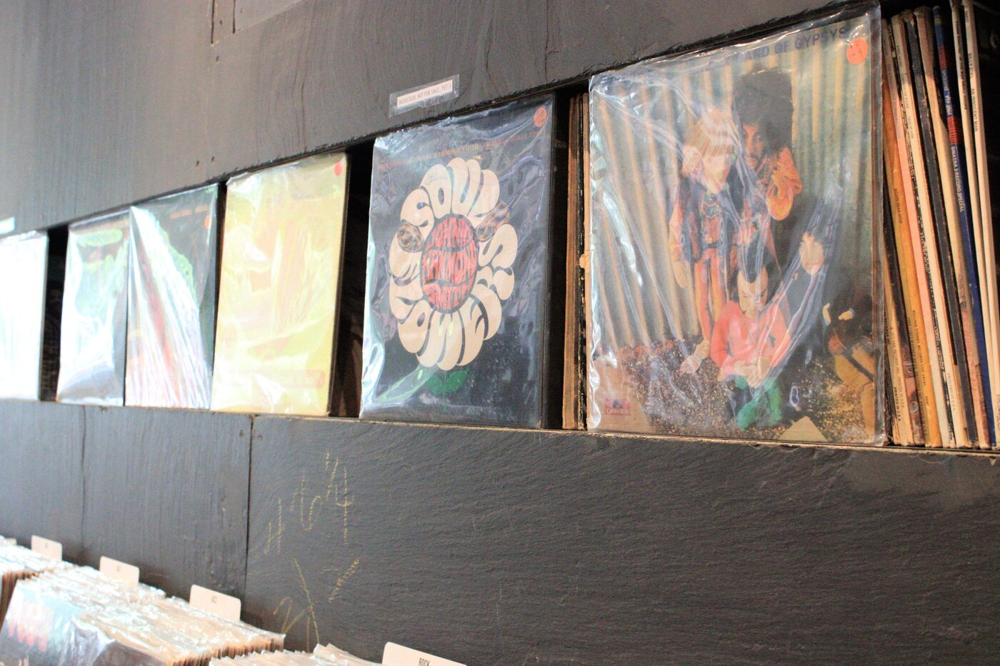

Pass The Aux Ongoing
Founder & Creative Director
Why I started it
Some music moments never leave you: watching my first Missy Elliott video with my sister, or my dad playing India.Arie's “I Am Not My Hair” while we waited for my mom to finish class. Music lets us connect with ourselves and with each other, and helps us feel more deeply. I started Pass The Aux so more people could have those moments together.
Our mission: cultivate community through the transformative power of music, with inclusive, immersive spaces where people can explore, reflect, and discover themselves in the safety of community.
By the numbers
What we built
The signature event. A free monthly gathering on Chicago's South Side, launched July 9, 2023 at Miyagi Records. Each event has a prompt, like “What song made you believe in love?”, and everyone gets a minute or two to share a song and why it matters to them. The shared songs become a playlist of the community. We moved from an open mic to a guided circle so introverts and people who come alone feel comfortable joining in.
The Interludes. An intimate concert series where local artists perform and share the story behind their music: Tiny Desk meets short documentary. Our first, with Rie Osei at Build Coffee in Woodlawn, sold out.
The Voicemail Series. A call-in line where people leave a message about what music means to them, a nod to the nostalgia of voicemail, and a way to include people who'd rather not speak in a room. Calls came in from across the country.
Partnerships with Black-owned and South Side businesses and organizations, including Miyagi Records, Build Coffee, Jon Basil Tequila, Mutha Earth, What's The Move?, and The Music Group.
My role
I founded Pass The Aux and lead it as Creative Director: setting the vision, shaping the brand and content, and curating our events and activations, with a team covering operations, programming, curation, business development, and technical production.
What's next
Becoming a nonprofit, growing our digital presence (weekly “PTA is now playing” posts and the Voicemail Series), and collaborating with the City of Chicago and other organizers.
I keep five “unicorn” goals as a reminder to dream big but test small: a PTA radio station and community Wrapped, The Interludes, PTA travel trips, the PTA Stamp (a mark of distinction for standout music projects), and a PTA studio. We've spent three years building MVPs of these, and each round brings us closer to the final versions.
